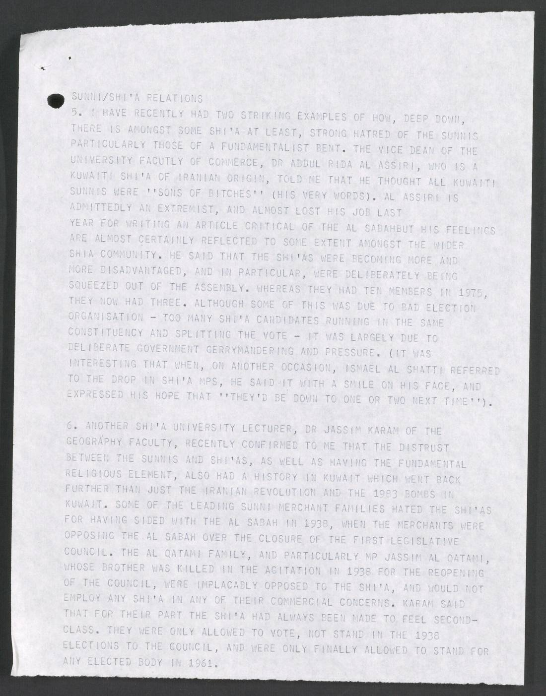

1986 · British Embassy telegram on Islam in Kuwait
"The Al Qatami family" and the 1938 Legislative Council
What it is
A British diplomat reports what a university lecturer, Dr Jassim Karam, told him about the history of Sunni and Shia relations in Kuwait. In it the lecturer names the Al Qatami family and says that a brother of MP Jassim Al Qatami was killed in the 1938 agitation for the reopening of the Legislative Council. That brother is Mohammed Abdulaziz Al-Qatami, who was killed in March 1939.
Why it matters
A British record of Mohammed Abdulaziz Al-Qatami's death in the 1938 Majlis movement. The note does not name him, but his death in March 1939 matches it; the British lecturer gives the year as 1938. The page also carries one lecturer's claim about the family's attitude to the Shia, reported secondhand by a diplomat, which the family may want to review before this page is shared.
Who is meant
The record names MP Jassim Al Qatami, identified by his full name in other records. His brother's death matches Mohammed Abdulaziz Al-Qatami, who was killed in March 1939; the lecturer says 1938.
Page copies

Original text
English translation
Notes
The archive's text reads "1993 bombs" and "Transan revolution"; the scan shows these are reading errors for 1983 and Iranian.
Others named
Sources
The National Archives, London, digitised by the Arabian Gulf Digital Archive (agda.ae). Images reproduced by permission of The National Archives, London, England.
Archive reference
- FCO 8/6196 · Islam in Kuwait
How this text was made: Typed from the archive's own text reading of the scan, corrected against the scan where the reading was garbled. … marks text left out. Arabic translation by Claude; please review.
Open in the interactive site